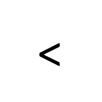

Nike Goalkeeper
Diseñados para ofrecer la máxima seguridad bajo los tres palos. Cuentan con una palma de látex sintético de gran adherencia que amortigua los disparos más potentes y garantiza un agarre superior en cualquier clima. Su dorso textil incorpora paneles transpirables para mantener las manos frescas, acompañados de una muñequera ajustable con cierre de velcro que asegura la muñeca en cada atajada.
$90.000